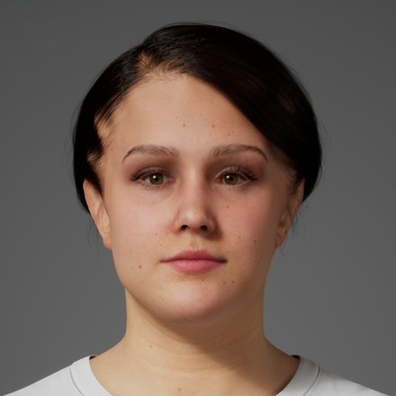
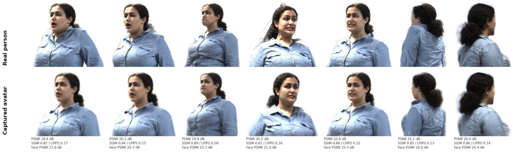
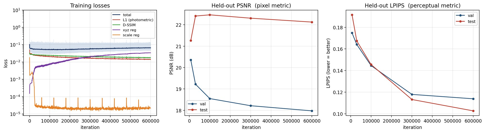
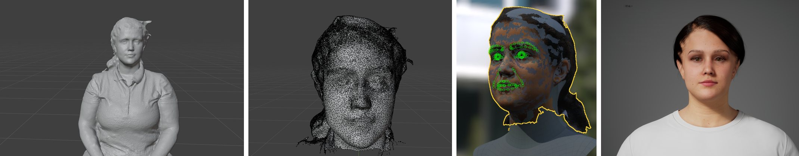

Hype-XR: 1st Workshop on Hyperrealism in XR in the Era of Radiance Fields · IEEE ISMAR 2026
Does Avatar Photorealism Enhance Social Presence? A Proposed Study Comparing Captured, Crafted, and Stylized Models
University of Minnesota
-

Realvideo frame
-

Captured3D Gaussian Splatting (GaussianAvatars)
-

CraftedMetaHuman, Unreal Engine
-

StylizedMeta avatar, Horizon Worlds
The question
VR research has mostly found that visual realism matters less than you might expect. Behavior, like gaze and motion, tends to matter more, stylized avatars often do as well as realistic ones, and very realistic faces risk the uncanny valley. But nearly all of that work used avatars that were clearly not real. 3D Gaussian Splatting can now build an avatar of a specific person that is hard to tell from video, so those findings may not carry over.
We propose a study that holds identity and behavior fixed and varies only how the person is rendered: captured, crafted, or stylized. Realistic is not the same as recognizable, so we also ask whether identity fidelity matters more than visual realism when the avatar is someone you know. Alongside the ratings, we will compute PSNR, SSIM, and LPIPS for each avatar to see whether the metrics graphics papers report have anything to do with what people experience.
The captured avatar
The captured avatar is a GaussianAvatars model: 3D Gaussians bound to the triangles of a FLAME head mesh, so the splats move with the mesh's expression and pose parameters. GaussianAvatars was built for studio rigs where every camera points at the face. My capture came from a 25-camera rig in an ordinary room, framing the upper body, so the head is a small patch in each image.
That mismatch caused most of the work. The 3DGS rasterizer assumes a centered principal point, and a plain crop around the off-center head moves it, so nothing rendered. I re-aim each camera at the tracked mesh's vertex centroid with a homography built only from camera rotation, which centers the head and leaves the FLAME fit in world space untouched. Composing lens undistortion and that warp into one resampling step instead of two made the training images 44% sharper (Laplacian variance over the foreground) and brought back the eyes and eyebrows. The trained model exports as a standard 3DGS point cloud and renders in Unity. It is drivable through its FLAME parameters in the GaussianAvatars viewer, and FLAME control inside Unity is the next step.


On unseen data the avatar reaches PSNR 22.1, SSIM 0.87, and LPIPS 0.10. GaussianAvatars reports 26.0, 0.910, and 0.076 under the same protocol on NeRSemble studio captures. The perceptual gap is small. The larger pixel gap follows the head's resolution, which in our room capture is about an order of magnitude below a studio face rig. Viewpoint matters too: well-covered views reach about 25.5 dB on the face, while oblique views the cameras barely saw drop to 17.6 dB.
Building it also showed the metric problem twice. During training, held-out PSNR peaked early and then fell while LPIPS kept improving, so the two metrics ranked the same checkpoints in opposite order. And the single-resampling fix visibly sharpened the irises and eyebrows while barely moving the averages (PSNR 22.1 against 22.2).

The crafted and stylized avatars
The crafted avatar is an Epic MetaHuman made from an iPhone scan taken with Polycam. I cleaned the scan in Blender, prepared the face mesh for Unreal Engine, and ran MetaHuman's identity solve against it. The result keeps my face shape but uses MetaHuman's own synthesized skin texture rather than the scan's.
The stylized avatar comes from Meta's avatar tool, built from a phone capture and rendered as a cartoon figure for Horizon Worlds. It makes no attempt at photographic likeness, and it is close to what a large share of social VR users see today.

The proposed study
The three avatars are crossed with three versions of the same real environment (captured, photorealistically modeled, and stylized), which makes nine static scenes. Every participant sees all nine in counterbalanced order. The avatar is seated, and participants meet the real person before the session so they can judge resemblance.
After each scene, participants rate co-presence, interpersonal trust, eeriness, perceived realism, and identity fidelity, and we measure spatial presence with the IPQ. We plan to recruit 36 people; a power analysis for a medium within-subjects effect (dz = 0.5, α = .05, power = .80) called for 34.
What we expect:
- Co-presence and trust will differ across the three avatars, but not necessarily in step with realism.
- Eeriness will peak for the mid-realism MetaHuman.
- PSNR, SSIM, and LPIPS will correlate at best weakly with what people report.
Longer term, I'm working toward an avatar pipeline that pairs 3D Gaussian Splatting with diffusion models, so one identity can be rendered at any level of realism, not only at the three points this study compares.
Cite
@inproceedings{kameli2026avatar,
author = {Kameli, Maryam and Bala, Praneet and Interrante, Victoria},
title = {Does Avatar Photorealism Enhance Social Presence? {A} Proposed
Study Comparing Captured, Crafted, and Stylized Models},
booktitle = {IEEE ISMAR 2026 Workshop on Hyperrealism in XR (HYPE-XR)},
year = {2026}
}